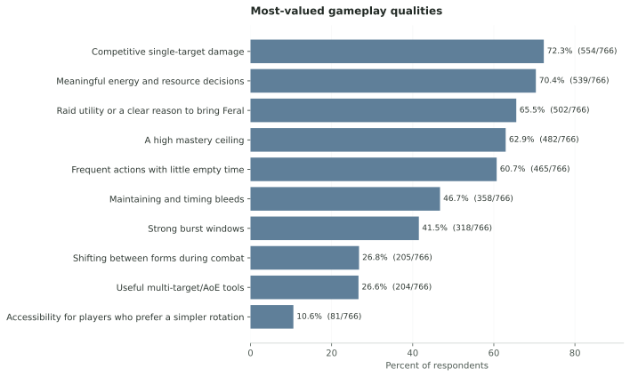

Executive summary
The updated data supports a nuanced central finding: the strongest rejection is aimed at the apparent loss of activity, resource agency, mastery, and shapeshifting identity—not a single unanimous demand for one historical mechanic.
Positive findings are real and should not be lost: combo points on the player, Clearcasting/Omen, Tiger’s Fury, and a stronger bleed identity all draw more positive than negative reaction. Respondents often approve of a broad direction while questioning its current execution—for example, liking bleeds as an identity but not finding the revealed bleed emphasis active enough.
Sample and data quality
The analysis covers 758 valid responses collected from September 20, 2026 at 10:01 AM through September 21, 2026 at 5:09 PM. A valid response is a row with a populated timestamp; allocated but empty sheet rows are not counted.
The sample is unusually informed: 405 respondents played the current test build, 219 closely reviewed source material or theorycrafting, and 106 followed detailed community discussion. Its largest primary-interest groups are Cat DPS (384), hybrid/off-tank play (225), and Bear tanking (95). Experience is concentrated among high-end/competitive (415) and regular organized-raiding players (280).
The duplicate audit found 0 rows in exact duplicate-answer groups. 18 rows share a timestamp with another row; timestamp collisions alone were not treated as duplicates because their answers differ. Missingness is reported per question below.
Missingness by question
| question | columns | missing_cells | respondents_with_any_missing | respondents | complete_percent |
|---|---|---|---|---|---|
| Q1 | 1 | 0 | 0 | 758 | 100.0 |
| Q2 | 1 | 0 | 0 | 758 | 100.0 |
| Q3 | 1 | 0 | 0 | 758 | 100.0 |
| Q4 | 1 | 0 | 0 | 758 | 100.0 |
| Q5 | 1 | 0 | 0 | 758 | 100.0 |
| Q6 | 1 | 0 | 0 | 758 | 100.0 |
| Q7 | 1 | 0 | 0 | 758 | 100.0 |
| Q8 | 1 | 0 | 0 | 758 | 100.0 |
| Q9 | 10 | 0 | 0 | 758 | 100.0 |
| Q10 | 10 | 0 | 0 | 758 | 100.0 |
| Q11 | 10 | 0 | 0 | 758 | 100.0 |
| Q12 | 1 | 0 | 0 | 758 | 100.0 |
| Q13 | 1 | 8 | 8 | 758 | 98.9 |
| Q14 | 1 | 3 | 3 | 758 | 99.6 |
| Q15 | 1 | 119 | 119 | 758 | 84.3 |
| Q16 | 1 | 147 | 147 | 758 | 80.6 |
| Q17 | 1 | 0 | 0 | 758 | 100.0 |
Familiarity CSVPrimary interest CSVExperience CSVVersions played CSV
Headline structured results


Powershifting nuance
Respondents separate the historical mechanic from the properties it supplied. 59.0% do not require literal powershifting if another mechanic supplies comparable activity and resource decisions; 22.4% affirmatively prefer a non-powershifting design if it retains depth. Only 14.5% choose literal restoration as their closest view.
At the same time, 69.4% react negatively to Furor and the loss or reduction of powershifting. Read together, these answers reject the inference that openness to alternatives equals approval of the current replacement.

Q15 topic assignments involving powershifting were separately polarity-coded because topic models are weak at negation. “Preserve powershifting” and “preserve its removal” are not treated as the same conclusion.
Q15 powershifting polarity table
| category | count | denominator | percent |
|---|---|---|---|
| Not mentioned | 685 | 758 | 90.4 |
| Mentioned; polarity unclear | 33 | 758 | 4.4 |
| Preserve removal/non-powershifting | 31 | 758 | 4.1 |
| Ambiguous/mixed | 7 | 758 | 0.9 |
| Preserve/restore | 2 | 758 | 0.3 |
What respondents value—and where the design falls short


The strongest positives are combo points stored on the player and Clearcasting/Omen. Tiger’s Fury and bleed emphasis are also net positive. The sharpest negatives concern Furor/powershifting, energy generation and pooling, AoE/Swipe, and weaving possibilities. The current design also receives broad disagreement that it preserves Feral’s shapeshifting identity or provides enough engaging decisions, appropriate downtime, and room for mastery.

Importance matrix CSVAgreement matrix CSVMechanic reactions CSVAttention selections CSVTest directions CSV
Subgroup comparisons
Differences below are descriptive, not causal. Every displayed subgroup has at least 30 respondents; each major proportion includes a Wilson 95% confidence interval. Overlapping intervals and self-selection limit what can be inferred.

Free-response themes
Word clouds size each term by the number of distinct responses mentioning it, not by raw repetition. Survey boilerplate is removed and meaningful phrases—including “Tiger’s Fury,” “energy pooling,” “skill expression,” “Bear weaving,” and “raid utility”—are preserved.


Transparent thematic validation
Rule-based mention coding checks the model against 14 predeclared themes. Categories are non-exclusive and ambiguous wording is not forced into a directional position. This layer distinguishes literal restoration, a functional equivalent, and non-powershifting-but-engaging requests from related complaints about energy, APM, mastery, identity, weaving, bleeds, AoE, hybrid play, Rogue similarity, tuning, and raid utility.
| theme | count | denominator | percent | coding |
|---|---|---|---|---|
| Bleed identity | 269 | 758 | 35.5 | Rule-based mention; non-exclusive |
| Powershifting or a functional equivalent | 126 | 758 | 16.6 | Rule-based mention; non-exclusive |
| AoE/Swipe | 113 | 758 | 14.9 | Rule-based mention; non-exclusive |
| High APM/activity | 93 | 758 | 12.3 | Rule-based mention; non-exclusive |
| Cat/Bear/caster weaving | 90 | 758 | 11.9 | Rule-based mention; non-exclusive |
| Distinctiveness from Rogue | 89 | 758 | 11.7 | Rule-based mention; non-exclusive |
| Hybrid/off-tank identity | 88 | 758 | 11.6 | Rule-based mention; non-exclusive |
| Energy downtime | 68 | 758 | 9.0 | Rule-based mention; non-exclusive |
| Skill expression/mastery | 62 | 758 | 8.2 | Rule-based mention; non-exclusive |
| Shapeshifting identity | 49 | 758 | 6.5 | Rule-based mention; non-exclusive |
| Literal powershifting restoration | 45 | 758 | 5.9 | Rule-based mention; non-exclusive |
| Raid utility | 42 | 758 | 5.5 | Rule-based mention; non-exclusive |
| Numerical tuning | 26 | 758 | 3.4 | Rule-based mention; non-exclusive |
| Non-powershifting but engaging | 4 | 758 | 0.5 | Rule-based mention; non-exclusive |
Topic models
Q14, Q15, and Q16 are modeled separately with TF-IDF unigrams/bigrams and non-negative matrix factorization. Candidate solutions from 4–10 topics were compared for stability, term diversity, redundancy, and reconstruction error. Labels were assigned only after inspecting top terms and high-weight responses. Primary-topic shares are an interpretive summary—not survey vote percentages—and the downloadable tables retain soft weights and secondary topics.

Topic prevalence CSVQ14 termsQ15 termsQ16 termsQ14 soft weights
Anonymous representative excerpts
“While feral shouldn't be the best in this regard, it needs some form of aoe cleave potential to be desirable in endgame pve content. With the other Druid specs, especially bear, and DPS specs getting significant buffs, i expect it to be very difficult to find groups as a ferals dps at max level. This will eventually lead to social pressure into playing feral tank or a dps spec that that can contribute more to a dungeon or overall raid clear. An easy fix would be the inclusion of cat swipe or primal wrath (aoe rip with decreased effectiveness/duration) with appropriate tuning.” — Q14, quoted with permission
“Given Feral druids previously high APM gameplay, design should be pushed in that direction. Preferably, however, not through powershifting. Powershifting is a clunky, outdated mechanic that invalidates energy, making the class clunky to play and harder to balance. I write this as someone who has powershifted in every expansion it is available, and will do so in Forever if it is the best dps rotation. However, I think other alternatives (tiger's fury resets, clearcasting, etc. would be much better).” — Q14, quoted with permission
“Extend baseline weapon DPS or Attack Power scaling to secondary abilities—specifically giving Swipe a modest ratio (e.g., 15–20%) and adding an AP modifier to Rake. Player experience improved: Eliminates dead buttons at max level and ensures smooth gear progression across the entire toolkit. For Bear tanks, a scaled Swipe fixes the severe threat gap on routine 3-to-4 mob dungeon pulls without forcing reliance on 1-minute bombs or 3-minute Berserk windows, all while strictly respecting the developers' 3-target AoE cap and crowd control meta.” — Q16, quoted with permission
“Meaningful shapeshifting from bear to cat while offtanking to contribute damage, as frequently as the player is confortable to secure a kill, while the damage contribution feels rewarding. TL/DR monobear for new players who play for the kill, and warden for experienced players who want to min-max on a spectrum. The best example here is TBC hunter melee weaving. It is always a dps increase to weave, irrespective of the party buffs, ranged vs melee weapon discrepancy or frequency of the weaves. I want this for feral while offtanking, shifting into cat should not be required, but should always provide a dps increase.” — Q14, quoted with permission
“Cat Form DPS needs a stronger identity. I’m open to whatever the rotation ultimately looks like, as long as it has verisimilitude... its mechanics should feel like an expression of being a Cat, rather than a collection of DPS mechanics that could belong to any class... Even downtime (energy pooling) for burst windows can contribute to that fantasy if it feels like waiting to strike their prey. That said, the feral charge talent for cats is a great movement towards this. Feels like folks are upset because something was taken away and little was given in its place. Even if the thing that (powershifting) was taken away was degenerated gameplay.” — Q14, quoted with permission
“The current feral design has far too much downtime. What is fun about playing feral in classic is always having buttons to press. Using your mana resource to gain energy via shifting meant that you always had something to do and decisions to make moment to moment that impact your dps and your value to a group. Standing still and auto attacking a boss because you dont have the energy resources to use your abilities is antithetical to the feral class dps experience.” — Q14, quoted with permission
“Getting rid of powershifting was a very good idea. However, the talents Furor and and Natural Shapeshifter should not exist. Cats should regenerate energy while not in form and the rage when shifting into bear should be baseline. The druid class is about shapeshifting and without those baseline changes shapeshifting feels bad and actively punishes cat for doing anything outside of cat. Making bleeds stronger is great but Forever has classic design cues, such as bleed immune enemies. Cats and bears being reliant on bleed to do damage and increase threat is going to feel very bad in some situations.” — Q14, quoted with permission
Change from the earlier 675-response snapshot
The additional responses do not materially overturn the earlier conclusions. Percentage-point changes are shown below; the live snapshot, rather than the earlier figures, is authoritative for this report.
| metric | earlier_675_percent | current_percent | change_pp |
|---|---|---|---|
| Negative toward current direction | 59.6 | 59.0 | -0.6 |
| Positive toward current direction | 22.5 | 23.2 | 0.7 |
| Less excited than Classic | 61.9 | 61.1 | -0.8 |
| More excited than Classic | 25.0 | 26.3 | 1.3 |
| Would probably/definitely play | 44.4 | 44.5 | 0.1 |
| Would probably/definitely not play | 33.6 | 33.0 | -0.6 |
| Functional replacement acceptable | 59.1 | 59.0 | -0.1 |
| Prefer non-powershifting if engaging | 22.2 | 22.4 | 0.2 |
| Specifically want Classic powershifting restored | 14.8 | 14.5 | -0.3 |
| Negative reaction to Furor/loss of powershifting | 70.1 | 69.4 | -0.7 |
| Rotation/activity selected for developer attention | 65.9 | 66.2 | 0.3 |
| Powershifting/Furor selected | 44.6 | 43.9 | -0.7 |
| Energy economy selected | 33.9 | 34.0 | 0.1 |
| Shapeshifting/weaving identity selected | 27.6 | 27.6 | -0.0 |
| AoE selected | 26.7 | 26.6 | -0.1 |
Methodology and limitations
- Source. Public CSV export of spreadsheet
1muybYt_lCb0MZvsquooyl1X5JbDz0K4gP-zT72lrM6E, worksheetForm Responses 1, retrieved September 21, 2026 at 5:18 PM CDT. - Snapshot. 758 populated timestamp rows × 45 columns; SHA-256
4e6694a846ce3a60d1f2126220f761377e309af26a8450da73346527da188f67. - Denominators. Counts and percentages retain “not enough information.” Multiselect tables clearly permit totals above 100%.
- Uncertainty. Wilson 95% intervals are shown for major subgroup proportions. They quantify sampling variability conditional on this sample, not representativeness.
- Qualitative analysis. Fixed random seed 20260921. NMF topics are descriptive summaries; negation and mixed statements require polarity checks and human review.
- Privacy. Raw responses are ignored by Git. Published excerpts require explicit Q17 permission and manual identifier screening. Aggregate-only responses are never quoted.
- Limitations. Self-selection, community-channel reach, response dependence, question wording, and the still-evolving revealed build all constrain interpretation. Subgroup differences are not causal effects.
Downloadable aggregate tables
All public tables are generated by the same refresh command as this page.
source_metadata.json overall_direction.csv likelihood_to_play.csv excitement.csv powershifting_preference.csv developer_attention.csv directions_to_test.csv importance_matrix.csv agreement_matrix.csv mechanic_reactions.csv subgroups.csv thematic_validation.csv q15_powershift_polarity.csv topic_prevalence.csv comparison_675.csv wordcloud_q14_terms.csv wordcloud_q15_terms.csv wordcloud_q16_terms.csv